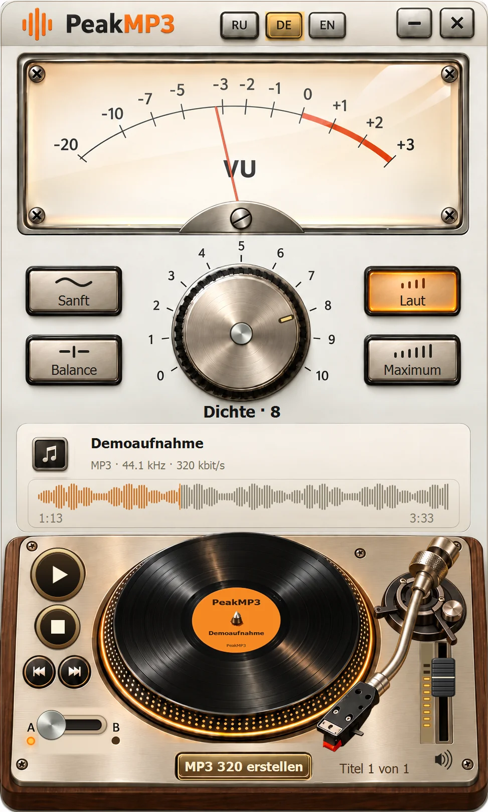

Mit dem Original arbeiten
AAC, MP3, WAV oder FLAC öffnen. Von YouTube erhält das Programm Original-AAC.
Analoger Charakter. Mit dem Original vergleichen und Ihre MP3 speichern.
Das Setup liegt im Release von YouTube Downloader: Beide Programme werden gemeinsam installiert, ein eigenes PeakMP3-Release gibt es nicht. Release YouTube Downloader 2.6.0

Installation, Funktionen, Datenschutz, Prüfung.
Prüfsumme vergleichen, Setup starten, PeakMP3 öffnen.
PeakMP3 bearbeitet Audiodateien auf Ihrem PC. Die Hörbeispiele auf dieser Seite sind vorbereitet; Ihre Dateien werden im Browser nicht verarbeitet.
Lokal · offlineAAC, MP3, WAV oder FLAC öffnen. Von YouTube erhält das Programm Original-AAC.
Dichteregler und A/B-Schalter helfen bei der Wahl der passenden Einstellung.
Der Speicherdialog beginnt auf dem Desktop. Sie können einen anderen Ordner wählen.
Drei Musikausschnitte. Titel wählen, am Plattenspieler Play drücken und den PeakMP3-Regler drehen.
Regler, Presets, A/B und Transport ausprobieren. Auf der Wellenform springen, rechts die Lautstärke einstellen.
Dichtestufen 0–10 wurden mit PeakMP3 0.16.0 vorbereitet. A ist der ursprüngliche Ausschnitt, B die gewählte Bearbeitung. Eigene Dateien werden nicht im Browser verarbeitet.
24-Sekunden-Ausschnitte: Schnitt, PeakMP3-Bearbeitung und MP3-Kodierung. Die Musiklizenz gilt unabhängig von den Programmbedingungen.
Regler, Presets, A/B und Transport ausprobieren. Auf der Wellenform springen, rechts die Lautstärke einstellen.